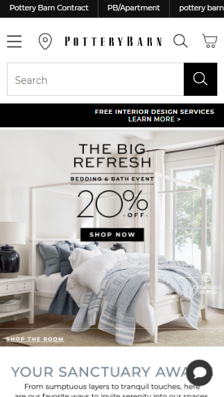
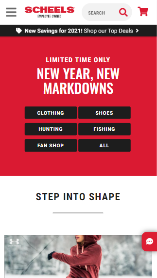

Alignment
Pottery Barn
Pottery Barn Website

The Pottery Barn website is very image heavy. To handle this, their alignment
helps their site look clean and interesting. Their grid system can be seen in their
mobile view, but it is much more apparent in larger viewports.
Contrast
Scheels
Scheels Website

The Scheels site is a great example of contrast. The main colors for
their site are bright red, black, and white. Any combination of those colors have good
contrast when used together. Their whole site has high contrast. They
make sure the text that is placed over images is highly readable.